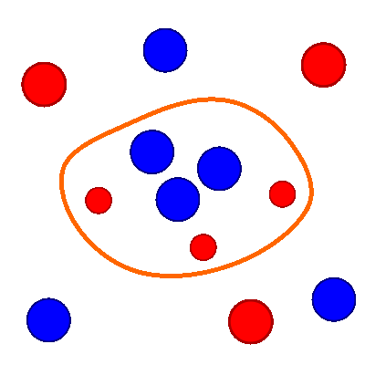

Zellmembran;
Zelläußeres:
Natriumionen (mit Hydrathülle größer);
Chloridionen;
Zellinneres:
Kaliumionen (mit Hydrathülle kleiner);
Anionische Protein-Seitenketten;
| Gehalt an ... in ... | Meerwasser & Körperflüssigkeit | Zellplasma |
|---|---|---|
| Natriumionen | hoch | niedrig |
| Kaliumionen | niedrig | hoch |
| Calciumionen (nicht dargestellt) | hoch | niedrig |
| Chloridionen | hoch | niedrig |